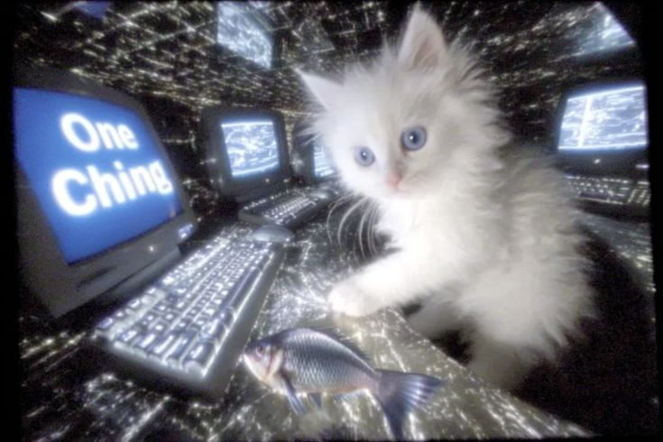

Tu atención es el campo de batalla
El problema no es la tecnología, sino cómo está diseñada. Las plataformas actuales utilizan una estrategia llamada Diseño Adictivo. Cada vez que deslizas el dedo hacia abajo (scroll), estás activando un mecanismo cerebral similar al de las máquinas tragamonedas.
¿Qué está pasando realmente?
Las empresas tecnológicas compiten por el recurso más valioso del planeta: tu tiempo. Para retenerte, el algoritmo aprende tus debilidades y te muestra contenido que genera emociones fuertes, manteniéndote en un ciclo infinito de dopamina que afecta tu capacidad de concentración, tu sueño y tu autoestima.
